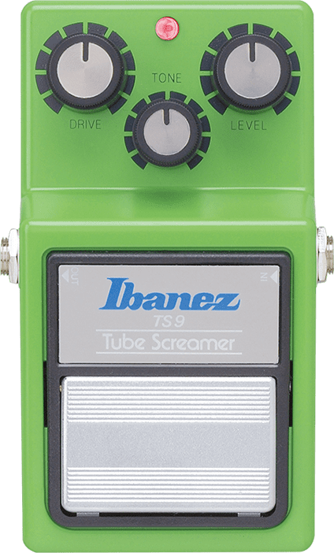
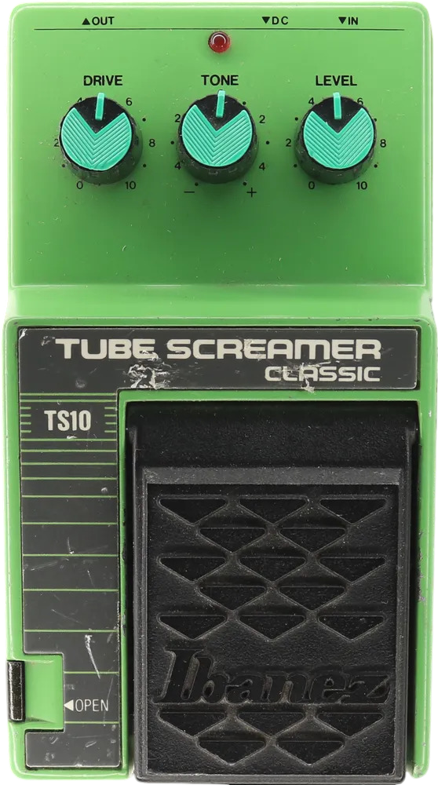
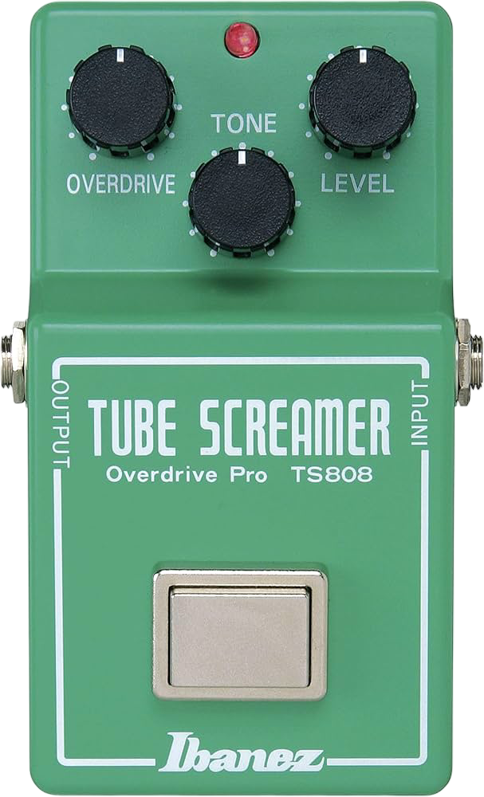

TS9
Tube Screamer
The Tube Screamer is a classic analog overdrive pedal that has been a studio staple since the 80s. The iconic green pedal is famous for its signature midrange boost and its tube-amp like overdrive.
The Ts9 consists of three controls: the drive, the volume, and the tone. Additionally, other iterations of the tube screamer includes a fourth control for the mid-boost. The tube screamer can be used as a boost for solos, an overdriven guitar tone, and a mid-range agent for lead guitar that can cut through the mix.

Stevie Ray Vaughan famously used a Ts9 as a "clean boost" to push his amps for solos.
John Mayer's favorite tube screamer, the Ibanez TS10 is the third generation tube screamer, succeeding the TS808 and the TS9. Users described the TS10 to have a more pronounced mid-range character and a-mdoother high-end tone. John Mayer famously switched to the TS10 and uses it along with the Klon for his iconic overdrive-stack tone.
Klon > TS10: Mid-Focused/Dynamic | TS10 > Klon: Compressed/Louder

